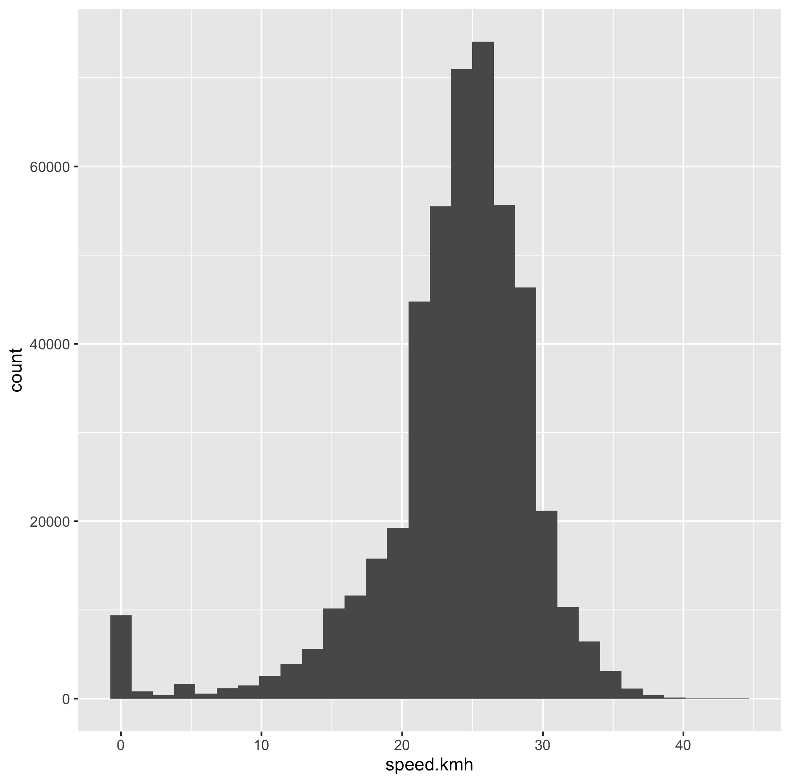
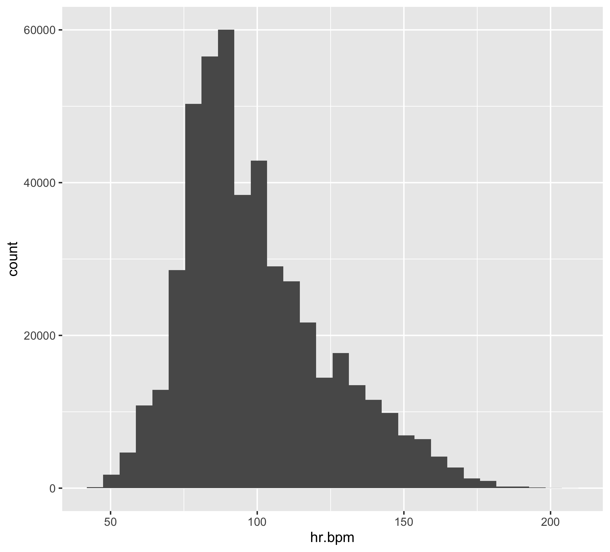
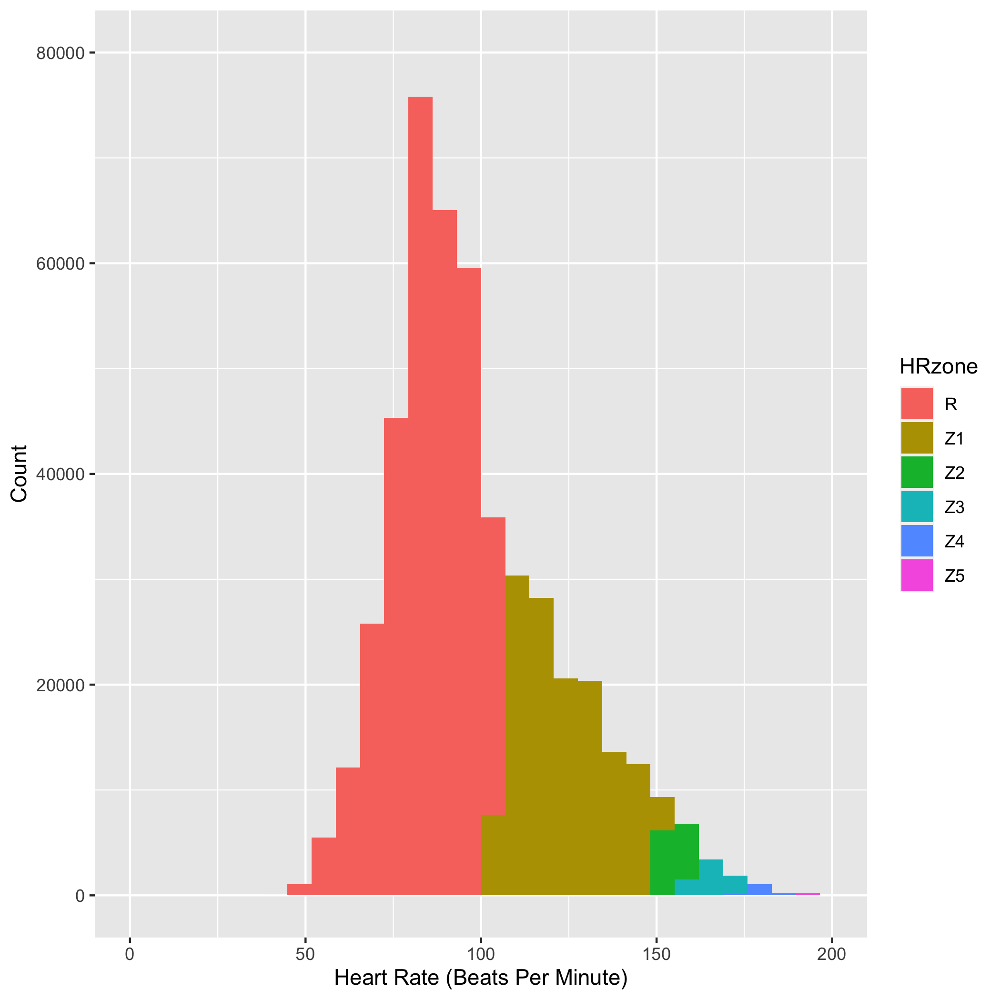

Cycle Commuting Data
For the last few years I commuted to work most days by bicycle along the Martin Luther King Jr. Regional Shoreline Park park in Oakland, CA. This will be a series of data science posts exploring personal data collected by my smart watch and publicly available weather, nature and biodiversity data. It is my hope that this will show into the brain of how a data scientist thinks, learns, asks questions, creates models, and visualizes data from right in their back yard.
We will be using the tidyverse package today to explore this dataset. Load the package.
library(tidyverse)
library(lubridate)
library(leaflet)I will do another post on how to make this dataset from exercise watch data at another time.
Here is the base dataset we will be working with.
load("MLK-park-commute.RData")To do some exploratory data analysis, let’s visualize some of the dataframe columns to get a feel for what the data represents. First I like to take a look at the data structure and get a feel for the variables.
ls()
head(commute)
dim(commute)
summary(commute)Convert the dataframe into a tibble which is a tidyverse dataframe that has some additional properties to make it easier to examine what is going on.
commute <- as_tibble(commute)
head(commute)Passing data around and filtering instead of creating new dataframes for everything is one of the features of tidyverse that I like the best. It is a different way of thinking that becomes more intuitive over time. Below I take the commute tibble pass it to filter to grab a specific single date. filter() then passes the filtered data to leaflet which plots the latitude and longitude data on an Openmaps popup in the browser.
commute %>% filter(date(commute$datetime) == "2018-08-29") %>%
leaflet() %>% addTiles() %>%
addPolylines(~lon, ~lat, color = 'blue', opacity = 1, weight = 10)
speed_plot <- ggplot(commute, aes(x=speed.kmh)) +
geom_histogram()
speed_plot
ggsave("speed-commute-plot.png")
The watch that I have has the ability to detect heart rate and it works fairly well if your wrist is not moving around compared to the much more accurate heart rate strap. Here I create a new column of data that breaks up the heart rate information into different zones roughly corresponding to different physiological states. These zones are defined by
commute$HRzone <- cut(commute$hr.bpm,c(0, 105, 150, 160, 174, 188, 200))
levels(commute$HRzone) = c("R","Z1","Z2","Z3","Z4","Z5")Let’s take a look at the heart rate data. First plotting a histogram.
bpm_plot <- ggplot(commute, aes(x=hr.bpm)) +
geom_histogram()
bpm_plot
ggsave("heart-rate-commute-bpm_plot.png")
Let’s add the heart rate zone information as color and then do some axis labeling and clean up.
bpm_plot2 <- ggplot(commute, aes(x=hr.bpm, fill = HRzone)) +
geom_histogram() +
scale_x_continuous(name="Heart Rate (Beats Per Minute)", limits=c(0, 200)) +
scale_y_continuous(name="Count", limits=c(0, 80000))
bpm_plot2
ggsave("heart-rate-commute-bpm_plot2.png")
You can see in the figure above that I spent most of my commuting time in low Z1 or the recovery heart rate zone. It was harder to do Z1-Z3 workouts on the commuting bike because I often had to go directly into meetings after a quick shower. This was frustrating at first, but I grew to love the slower pace and over the few years got to observe some amazing tidal changes, bird migrations, wildflower blooms, sunrises and sunsets along the MLK shoreline. More on the natural history of the area in the subsequent posts.